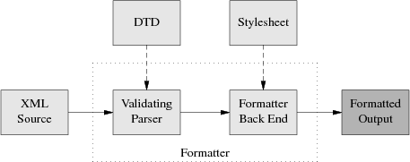
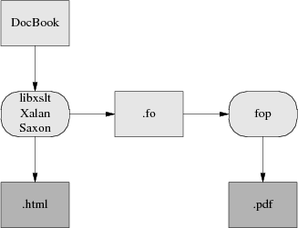

DocBook Demystification HOWTO
Eric Raymond
| Revision History | ||
|---|---|---|
| Revision v1.6 | 2010-09-14 | Revised by: esr |
| Major update. dblatex actually works for PDF production. Describe asciidoc. | ||
| Revision v1.5 | 2006-10-13 | Revised by: esr |
| Major update. Getox seems to be dead, FOP a bit further along. | ||
| Revision v1.4 | 2004-10-28 | Revised by: esr |
| Minor update and license change. | ||
| Revision v1.3 | 2004-02-27 | Revised by: esr |
| Add pointers to two editors. | ||
| Revision v1.2 | 2003-02-17 | Revised by: esr |
| Reorder to defer references to SGML until after it has been introduced. | ||
| Revision v1.1 | 2002-10-01 | Revised by: esr |
| Correct inadvertent misrepresentation of FSF's position. Added pointer to the DocBook FAQ. | ||
| Revision v1.0 | 2002-09-20 | Revised by: esr |
| Initial version. | ||
Copyright
Permission is granted to copy, distribute and/or modify this document under the terms of the Creative Commons Attribution License, version 2.0.
- Table of Contents
- 1. Introduction
- 2. Why care about DocBook at all?
- 3. Structural markup: a primer
- 4. Document Type Definitions
- 5. Other DTDs
- 6. The DocBook toolchain
- 7. asciidoc
- 8. Who are the projects and the players?
- 9. Migration tools
- 10. Editing tools
- 11. Hints and tricks
- 12. Related standards and practices
- 13. SGML and SGML-Tools
- 13.1. DocBook SGML
- 13.2. SGML tools
- 13.3. Why SGML DocBook is dead
- 13.4. SGML-Tools
- 14. References
1. Introduction
A great many major open-source projects are converging on DocBook as a standard format for their documentation — projects including the Linux kernel, GNOME, KDE, Samba, and the Linux Documentation Project. The advocates of XML-based "structural markup" (as opposed to the older style of "presentation markup" exemplified by troff, Tex, and Texinfo) seem to have won the theoretical battle. You can generate presentation markup from structural markup, but going in the other direction is very difficult.
Nevertheless, a lot of confusion surrounds DocBook and the programs that support it. Its devotees speak an argot that is dense and forbidding even by computer-science standards, slinging around acronyms that have no obvious relationship to the things you need to do to write markup and make HTML or Postscript from it. XML standards and technical papers are notoriously obscure.
This HOWTO will attempt to clear up the major mysteries surrounding DocBook and its application to open-source documentation — both the technical and political ones. Our objective is to equip you to understand not just what you need to do to make documents, but why the process is as complex as it is — and how it can be expected to change as newer DocBook-related tools become available.
2. Why care about DocBook at all?
There are two possibilities that make DocBook really interesting. One is multi-mode rendering and the other is searchable documentation databases.
Multi-mode rendering is the easier, nearer-term possibility; it's the ability to write a document in a single master format that can be rendered in many different display modes (in particular, as both HTML for on-line viewing and as Postscript for high-quality printed output). This capability is pretty well implemented now.
Searchable documentation databases is shorthand for the possibility that DocBook might help get us to a world in which all the documentation on your open-source operating system is one rich, searchable, cross-indexed and hyperlinked database (rather than being scattered across several different formats in multiple locations as it is now).
Ideally, whenever you install a software package on your machine it would register its DocBook documentation into your system's catalog. HTML, properly indexed and cross-linked to the HTML in the rest of your catalog, would be generated. The new package's documentation would then be available through your browser. All your documentation would be searchable through an interface resembling a good Web search engine.
HTML itself is not quite rich enough a format to get us to that world. To name just one lack, you can't explicitly declare index entries in HTML. DocBook does have the semantic richness to support structured documentation databases. Fundamentally that's why so many projects are adopting it.
DocBook has the vices that go with its virtues. Some people find it unpleasantly heavyweight, and too verbose to be really comfortable as a composition format. That's OK; as long as the markup tools they like (things like asciidoc or Perl POD or GNU Texinfo) can generate DocBook out their back ends, we can all still get what we want. It doesn't matter whether or not everybody writes in DocBook — as long as it becomes the common document interchange format that everyone uses, we'll still get unified searchable documentation databases.
3. Structural markup: a primer
Older formatting languages like Tex, Texinfo, and Troff supported presentation markup. In these systems, the instructions you gave were about the appearance and physical layout of the text (font changes, indentation changes, that sort of thing).
Presentation markup was adequate as long as your objective was to print to a single medium or type of display device. You run into its limits, however, when you want to mark up a document so that (a) it can be formatted for very different display media (such as printing vs. Web display), or (b) you want to support searching and indexing the document by its logical structure (as you are likely to want to do, for example, if you are incorporating it into a hypertext system).
To support these capabilities properly, you need a system of structural markup. In structural markup, you describe not the physical appearance of the document but the logical properties of its parts.
As an example: In a presentation-markup language, if you want to emphasize a word, you might instruct the formatter to set it in boldface. In troff(1) this would look like so:
All your base .B are belong to us! |
In a structural-markup language, you would tell the formatter to emphasize the word:
All your base <emphasis>are</emphasis> belong to us! |
The "<emphasis>" and </emphasis>in the line above are called markup tags, or just tags for short. They are the instructions to your formatter.
In a structural-markup language, the physical appearance of the final document would be controlled by a stylesheet . It is the stylesheet that would tell the formatter "render emphasis as a font change to boldface". One advantage of structural-markup languages is that by changing a stylesheet you can globally change the presentation of the document (to use different fonts, for example) without having to hack all the the individual instances of (say) .B in the document itself.
4. Document Type Definitions
(Note: to keep the explanation simple, most of this section is going to tell some lies, mainly by omitting a lot of history. Truthfulness will be fully restored in a following section.)
DocBook is a structural-level markup language. Specifically, it is a dialect of XML. A DocBook document is a hunk of XML that uses XML tags for structural markup.
In order for a document formatter to apply a stylesheet to your document and make it look good, it needs to know things about the overall structure of your document. For example, it needs to know that a book manuscript normally consists of front matter, a sequence of chapters, and back matter in order to physically format chapter headers properly. In order for it to know this sort of thing, you need to give it a Document Type Definition or DTD. The DTD tells your formatter what sorts of elements can be in the document structure, and in what orders they can appear.
What we mean by calling DocBook an `application' of XML is actually that DocBook is a DTD — a rather large DTD, with somewhere around 400 tags in it.
Lurking behind DocBook is a kind of program called a validating parser.When you format a DocBook document, the first step is to pass it through a validating parser (the front end of the DocBook formatter). This program checks your document against the DocBook DTD to make sure you aren't breaking any of the DTD's structural rules (otherwise the back end of the formatter, the part that applies your style sheet, might become quite confused).
The validating parser will either bomb out, giving you error messages about places where the document structure is broken, or translate the document into a stream of formatting events which the parser back end combines with the information in your stylesheet to produce formatted output
Here is a diagram of the whole process:

The part of the diagram inside the dotted box is your formatting software, or toolchain. Besides the obvious and visible input to the formatter (the document source) you'll need to keep the two `hidden' inputs of the formatter (DTD and stylesheet) in mind to understand what follows.
5. Other DTDs
A brief digression into other DTDs may help make clear what parts of the previous section were specific to DocBook and what parts are general to all structural-markup languages.
TEI (Text Encoding Initiative) is a large, elaborate DTD used primarily in academia for computer transcription of literary texts. TEI's Unix-based toolchains use many of the same tools that are involved with DocBook, but with different stylesheets and (of course) a different DTD.
XHTML, the latest version of HTML, is also an XML application described by a DTD, which explains the family resemblance between XHTML and DocBook tags. The XHTML toolchain consists of web browsers and a number of ad-hoc HTML-to-print utilities.
Many other XML DTDs are maintained to help people exchange structured information in fields as diverse as bioinformatics and banking. You can look at a list of repositories to get some idea of the variety out there.
6. The DocBook toolchain
The easiest way to format and render XML-DocBook documents is to use the xmlto toolchain. This ships with Red Hat; Debian users can get it with the command apt-get install xmlto.
Normally, what you'll do to make XHTML from your DocBook sources will look like this:
bash$ xmlto xhtml foo.xml bash$ ls *.html ar01s02.html ar01s03.html ar01s04.html index.html |
In this example, you converted an XML-Docbook document named foo.xml with three top-level sections into an index page and two parts. Making one big page is just as easy:
bash$ xmlto xhtml-nochunks foo.xml bash$ ls *.html foo.html |
Finally, here is how you make PDF for printing:
bash$ dblatex foo.xml # To make PDF bash$ ls *.pdf foo.pdf |
Some older versions of xmlto may be more verbose, emitting noise like "Converting to XHTML" and so forth.
To turn your documents into HTML or PDF, you need an engine that can apply the combination of DocBook DTD and a suitable stylesheet to your document. Here is how the open-source tools for doing this fit together:

Present-day XML-DocBook toolchain
Parsing your document and applying the stylesheet transformation will be handled by one of three programs. The most likely one is xsltproc. The other possibilities are two Java programs, Saxon and Xalan,
It is relatively easy to generate high-quality XHTML from DocBook; the fact that XHTML is simply another XML DTD helps a lot. Translation to HTML is done by applying a rather simple stylesheet, and that's the end of the story. RTF is also simple to generate in this way, and from XHTML or RTF it's easy to generate a flat ASCII text approximation in a pinch.
The awkward case is print. Generating high-quality printed output (which means, in practice, Adobe's PDF or Portable Document Format, a packaged form of PostScript) is difficult. Doing it right requires algorithmically duplicating the delicate judgments of a human typesetter moving from content to presentation level.
So, first, a stylesheet translates Docbook's structural markup into another dialect of XML — FO (Formatting Objects). FO markup is very much presentation-level; you can think of it as a sort of XML functional equivalent of troff. It has to be translated to Postscript for packaging in a PDF.
In the toolchain shipped with most present-day Linux distributions, this job is best handled by a program called dblatex (this obsoletes the older passivetex package that previous versions of tis HOWTO described).
dblatex translates the formatting objects generated by xsltproc into Donald Knuth's TeX language. TeX was one of the earliest open-source projects, an old but powerful presentation-level formatting language much beloved of mathematicians (to whom it provides particulaly elaborate facilities for describing mathematical notation). TeX is also famously good at basic typesetting tasks like kerning, line filling, and hyphenating. TeX's output is then massaged into PDF.
If you think this bucket chain of XML to Tex macros to PDF sounds like an awkward kludge, you're right. It clanks, it wheezes, and it has ugly warts. Fonts are a significant problem, since XML and TeX and PDF have very different models of how fonts work; also, handling internationalization and localization is a nightmare. About the only thing this code path has going for it is that it works.
The elegant way will be FOP, a direct FO-to-Postscript translator being developed by the Apache project. With FOP, the internationalization problem is, if not solved, at least well confined; XML tools handle Unicode all the way through to FOP. Glyph to font mapping is also strictly FOP's problem. The only trouble with this approach is that it entirely doesn't work yet. As of October 2010 FOP is at 1.0 and usable, but with rough edges and missing features. I recommed dblatex for production use.
Here is what the FOP toolchain looks like:

Future XML-DocBook toolchain with FOP.
7. asciidoc
There is a relatively new tool called asciidoc that tackles several of the problems associated with DocBook rather effectively.
The asciidoc tool accepts a simple, lightweight syntax resembling wiki markups and turns it into various output formats using DocBook as an intermediate stage. The asciidoc markup is easier to compose in than DocBook itself, and serves as its own best rendering in flat ASCII.
Printing support in asciidoc is through an experimental LaTeX back end. It is most useful for writing short to medium-length documents for World Wide Web distribution.
8. Who are the projects and the players?
The DocBook DTD itself is maintained by the DocBook Technical Committee, headed by Norman Walsh. Norm is the principal author of the DocBook stylesheets, a man who has focused remarkable energy and talent over many years on the extremely complex problems DocBook addresses. He is as universally respected in the DocBook community as Linus Torvalds is in the Linux world.
libxslt is a C library that interprets XSLT, applying stylesheets to XML documents. It includes a wrapper program, xsltproc, that can be used as an XML formatter. The code was written by Daniel Veillard under the auspices of the GNOME project, but does not require any GNOME code to run. I hear it's blazingly fast compared to the Java alternatives, not a surprising claim.
xmlto is the user interface of the XML toolchain that most Linuxes. It's written and maintained by Tim Waugh.
Saxon and Xalan are Java programs that interpret XSLT. Saxon seems to be designed to work under Windows. Xalan is part of the XML Apache project and native to Linux and BSD; it's designed to work with FOP.
FOP translates XML Formatting Objects to PDF. It is part of the Apache XML project and is designed to work with Xalan.
asciidoc translates its own lightweight markup to DocBook, and thence to various output formats.
9. Migration tools
The second biggest problem with DocBook is the effort needed to convert old-style presentation markup to DocBook markup. Human beings can usually parse the presentation of a document into logical structure automatically, because (for example) they can tell from context when an italic font means `emphasis' and when it means something else such as `this is a foreign phrase'.
Somehow, in converting documents to DocBook, those sorts of distinctions need to be made explicit. Sometimes they're present in the old markup; often they are not, and the missing structural information has to be either deduced by clever heuristics or added by a human.
Here is a summary of the state of conversion tools from various other formats:
- GNU Texinfo
The Free Software Foundation has made a policy decision to support DocBook as an interchange format. Texinfo has enough structure to make reasonably good automatic conversion possible, and the 4.x versions of makeinfo feature a --docbook switch that generates DocBook. More at the makeinfo project page.
- POD
There is a POD::DocBook module that translates Plain Old Documentation markup to DocBook. It claims to translate every POD tag except the L<> italic tag. The man page also says "Nested =over/=back lists are not supported within DocBook." but notes that the module has been heavily tested.
- LaTeX
LaTeX is a (mostly) structural markup macro language built on top of the TeX formatter. There is a project called TeX4ht that (according to the author of PassiveTeX) can generate DocBook from LaTeX.
- man pages and other troff-based markups
This is generally considered the biggest and nastiest conversion problem. And indeed, the basic troff(1) markup is at too low a presentation level for automatic conversion tools to do much of any good. However, the gloom in the picture lightens significantly if we consider translation from sources of documents written in macro packages like man(7). These have enough structural features for automatic translation to get some traction.
I wrote a tool to do this myself, because I couldn't find anything else that did a half-decent job of it (and the problem is interesting). It's called doclifter. It will translate to either SGML or XML DocBook from man(7), mdoc(7), ms(7), or me(7) macros. See the documentation for details.
10. Editing tools
Most people still hack DocBook tags by hand using either vi or emacs. There's an Nxml mode that ships with Emacs and is automatically invoked when the editor recognizes an XMl document. It has become pretty good; while it doesn't give GUI presentation, it does use its knowledge of XML to highlight out-of-balance tags. Some alternative are summarized at the Emacs CategoryXML page.
There have been a number of attempts at GUI editors for DocBook, often with the aim of being general editors for any markup with an XML or SGML schema. EuroMath, MLView, Conglomerate, ThotBook are among them. Such projects tent to stall out in alpha stage; designing a decent UI for this task is extemely difficult.
Some attempts that have made it to production stage (if only barely, in many cases) can be found at the DocBook Authoring Tools page. I have not tried using any of these.
11. Hints and tricks
It is possible to generate an index by including an empty <index/> tag at the point in your document where you wish it to appear. Be warned that, as of early 2004, this facility is still somewhat primitive. It won't merge ranges, and the output generated for PostScript is not yet production-quality.
This space is reserved for more hints and tricks.
12. Related standards and practices
The tools are coming together, if slowly, to edit and format DocBook markup. But DocBook itself is a means, not an end. We'll need other standards besides DocBook itself to accomplish the searchable-documentation-database objective I laid out at the beginning of this document. There are two big issues: document cataloguing and metadata.
The Scrollkeeper project aims directly to meet this need. It provides a simple set of script hooks that can be used by package install and uninstall productions to register and unregister their documentation into and out of a shared, searchable system-wide database.
Scrollkeeper uses the Open Metadata Format. This is a standard for indexing open-source documentation analogous to a library card-catalog system. The idea is to support rich search facilities that use the card-catalog metadata as well as the source text of the documentation itself.
13. SGML and SGML-Tools
In previous sections, I have thrown away a lot of DocBook's history. XML has an older brother, SGML or Standard Generalized Markup Language.
Until mid-2002, no discussion of DocBook would have been complete without a long excursion into SGML, the differences between SGML and XML, and detailed descriptions of the SGML DocBook toolchain. Life can be simpler now; an XML DocBook toolchain is available in open source, works as well as the SGML toolchain ever did, and is much easier to use. If you don't think you'll ever have to deal with old SGML-Docbook documents, you can skip the remainder of this section.
13.1. DocBook SGML
DocBook was originally an SGML application, and there was an SGML-based DocBook toolchain that is now moribund. There are minor differences between the DocBook SGML DTD and the DocBook XML DTD, but for an introductory discussion we can ignore them. The only one that's normally user-visible is that in SGML contentless tags did not need to have a trailing slash added to them before the closing >. (Requiring the trailing / means XML parsers can be a lot simpler, because they don't have to know about the DTD to know which opening tags need closers.)
Versions of HTML up to 4.01 (before XHTML) were SGML applications. TEI was originally an SGML application, too. The groups managing all three DTDs jumped to XML for the same reason DocBook's developers did — it's drastically simpler. SGML was extremely complex; unmanageably so, as it turns out. The specification was a dense 150 pages and it is not reliably reported that any software ever fully implemented it.
The toolchain diagram I gave earlier was simplified; it only showed the XML toolchain. Here is the historically correct version:

The DSSSL toolchain is what processed DocBook SGML. Under it, a document goes from DocBook format through one of two closely-related stylesheet engines called Jade and OpenJade. These turn it into a TeX-macro markup, which is processed by a package called JadeTeX, into DVIs, which then get turned into Postscript.
13.2. SGML tools
The docbook-tools project provides open-source tools for converting SGML DocBook to HTML, Postscript, and other formats. This package is shipped with Red Hat and other Linux distributions. It is maintained by Mark Galassi.
Jade is an engine used to apply DSSSL stylesheets to SGML documents. It is maintained by James Clark.
OpenJade is a community project undertaken because the founders thought James Clark's maintainance of Jade was spotty. The docbook-tools programs use OpenJade.
PassiveTeX the package of LaTeX macros that xmlto uses for producing DVI from XML-DocBook. JadeTex is the package of LaTeX macros that OpenJade uses for producing DVI from SGML-DocBook.
13.3. Why SGML DocBook is dead
The DSSSL toolchain is, as far as new development goes, effectively dead. The XSLT toolchain has reached production status in mid-2002; a working version shipped in Red Hat 7.3. It's where DocBook developers are putting almost all of their effort.
The reason for the change to XML was threefold. First, SGML turned out to be too complicated to use; then, DSSSL turned out to be too complicated to live with; then, significant parts of the DSSSL toolchain turned out to be weak and irredeemably messy.
Relative to SGML, XML has a reduced feature set that is sufficient for almost all purposes but much easier to understand and build parsers for. SGML-processing tools (such as validating parsers) have to carry around support for a lot of features that DocBook and other text markup systems never actually used. Removing these features made XML simpler and XML-processing tools faster.
The language used to describe SGML DTDs is sufficiently spiky and forbidding that composing SGML DTDs was something of a black art. XML DTDs, on the other hand, can be described in a dialect of XML itself; there does not need to be a separate DTD language. An XML description of an XML DTD is called a schema; the term DTD itself will probably pass out of use as the standards for schemas firm up.
But mostly the DSSSL toolchain is dead because DSSSL itself, the SGML stylesheet description language in that toolchain, proved just too arcane for most human beings, and made stylesheets too difficult to write and modify. (It was a dialect of Scheme. Your humble editor, a LISP-head from way back, shakes his head in sad bemusement that this should drive people away.)
XML fans like to sum up all these changes with "XML: tastes great, less filling."
13.4. SGML-Tools
SGML-Tools was the name of a DTD used by the Linux Documentation Project, developed a few years ago when today's DocBook toolchains didn't exist. SGML-Tools markup was simpler, but also much less flexible than DocBook. The original SGML-Tools formatter/DTD/stylesheet(s) toolchain has been dead for some time now, but a successor called SGML-tools Lite is still maintained.
The LDP has been phasing out SGML-Tools in favor of DocBook, but it is still possible you might take over an old HOWTO. These can be recognized by the identifying header "<!doctype linuxdoc system>". If this happens to you, convert the thing to XML DocBook and give the old version a quick burial.
14. References
One of the things that makes learning DocBook difficult is that the sites related to it tend to overwhelm the newbie with long lists of W3C standards, massive exercises in markup theology, and dense thickets of abstract terminology. We're going to try to avoid that here by giving you just a few selected references to look at.
Michael Smith's Take My Advice: Don't Learn XML surveys the XML world from an angle similar to this document.
Norman Walsh's DocBook: The Definitive Guide is available in print and on the web. This is indeed the definitive reference, but as an introduction or tutorial it's a disaster. Instead, read this:
Writing Documentation Using DocBook: A Crash Course. This is an excellent tutorial.
There is an excellent DocBook FAQ with a lot of material on styling HTML output. There is also a DocBook wiki.
If you're writing for the Linux Documentation Project, read the LDP Author Guide.
The best general introduction to SGML and XML that I've personally read all the way through is David Megginson's Structuring XML Documents (Prentice-Hall, ISBN: 0-13-642299-3).
For XML only, XML In A Nutshell by W. Scott Means and Elliotte "Rusty" Harold is very good.
The XML Bible looks like a pretty comprehensive reference on XML and related standards (including Formatting Objects).
Finally, the The XML Cover Pages will take you into the jungle of XML standards if you really want to go there.